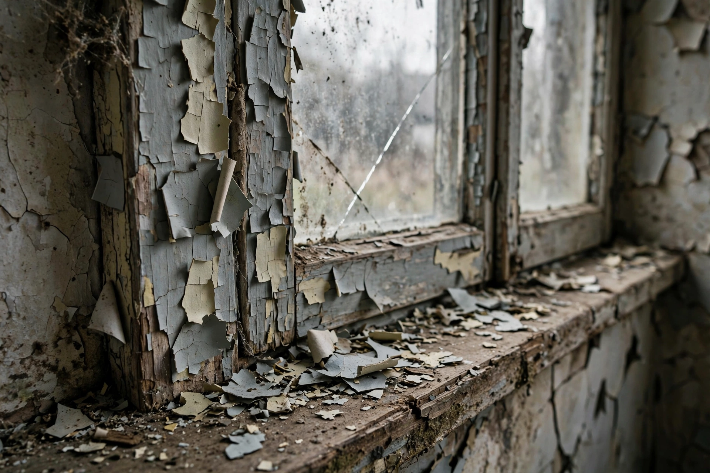

Lead poisoning
| Lead poisoning | |
|---|---|
 Deteriorating lead paint is a major exposure source for children | |
| Specialty | Toxicology |
| Symptoms | Abdominal pain, headaches, anaemia, irritability, developmental delay; severe: seizures, coma |
| Causes | Exposure to lead (paint, water pipes, batteries, contaminated soil, leaded petrol) |
| Diagnosis | Blood lead level |
| Prevention | Removing lead from paint, petrol, plumbing and workplaces |
Lead poisoning, also known as plumbism or saturnism, is a type of metal poisoning caused by lead in the body. Lead interferes with numerous biological processes and is toxic to many organs and tissues, including the brain, kidneys, liver and reproductive system. The brain is the organ most sensitive to lead exposure; in children, even low-level chronic exposure is associated with impaired intellectual development, reduced IQ and behavioural problems, and no safe threshold has been identified.
Signs and symptoms
Symptoms vary with dose and duration. Acute high-dose poisoning causes abdominal colic, constipation, headaches, anaemia (with characteristic basophilic stippling of red blood cells), peripheral neuropathy ("wrist drop"), and in severe cases encephalopathy with seizures and coma. Chronic exposure causes fatigue, irritability, kidney damage, hypertension, gout ("saturnine gout") and reproductive harm. A blue "Burton line" may appear on the gums. Lead is stored in bone for decades and can be remobilised during pregnancy or illness.
Sources and history
Lead has been used since antiquity — in Roman plumbing (the word plumbing derives from Latin plumbum), paints, cosmetics and as a sweetener in wine — and poisoning was recognised by physicians including Hippocrates and Ramazzini. In the 20th century the largest population exposures came from lead paint in housing and tetraethyl lead added to petrol; the global phase-out of leaded petrol (completed in 2021) is regarded as a major public-health achievement, associated with large declines in average blood lead levels. Remaining sources include pre-1978 housing paint, lead service pipes and solder, battery recycling, smelting, some traditional remedies and cosmetics, and contaminated water — as in the Flint, Michigan water crisis of 2014.
Diagnosis and treatment
Diagnosis is by blood lead level, measured in micrograms per decilitre; the U.S. CDC reference value for children is 3.5 µg/dL. Treatment centres on identifying and removing the source of exposure. Chelation therapy (with EDTA, DMSA/succimer or penicillamine) is used at high levels to bind lead and promote excretion. Prevention — abatement of paint hazards, replacement of lead pipes, occupational controls and screening of at-risk children — is considered far more effective than treatment, since neurological damage is largely irreversible.